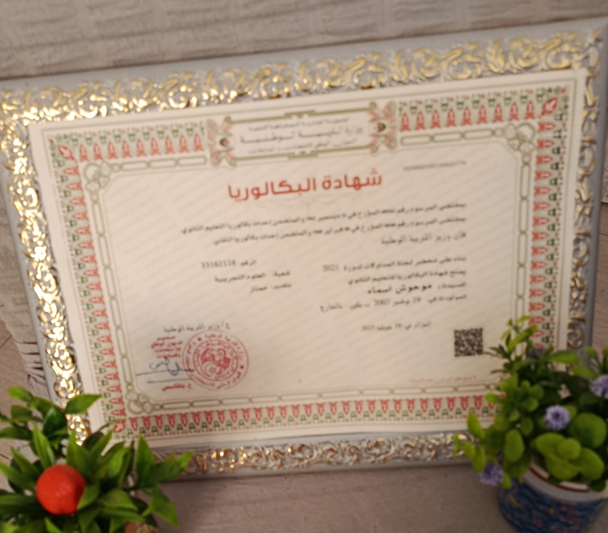

Hi, I am Asmaa Mouhouche 👋
السلام عليكم و رحمة الله تعالى و بركاته
أنا أسماء موحوش ,طالبة سنة أولى بالمدرسة العليا للذكاء الإصطناعي.
تحصلت على شهادة الباكالوريا دورة 2025 بمعدل 18.51
هذا الموقع صدقة جارية لمنفعة طلاب الباكالوريا,أتمنى أن ينال إعجابكم
وتحصدوا منه ما يفيدكم .كل ما أوده هو دعوات خير لي و لنجمة طويل صاحبة المشروع الذي
ألهمني لتقديم هذه المبادرة .هاذا هو رابط الموقع الذي صممته https://nedjema-touil.github.io/bac-Tools/
